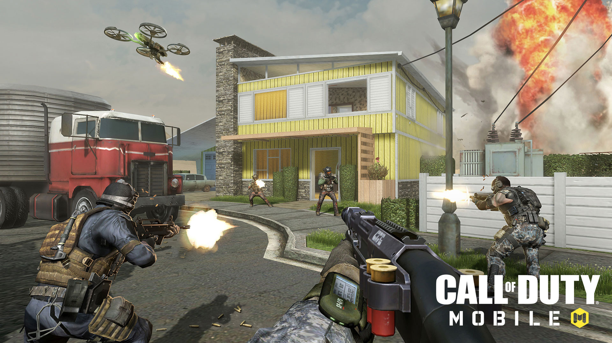
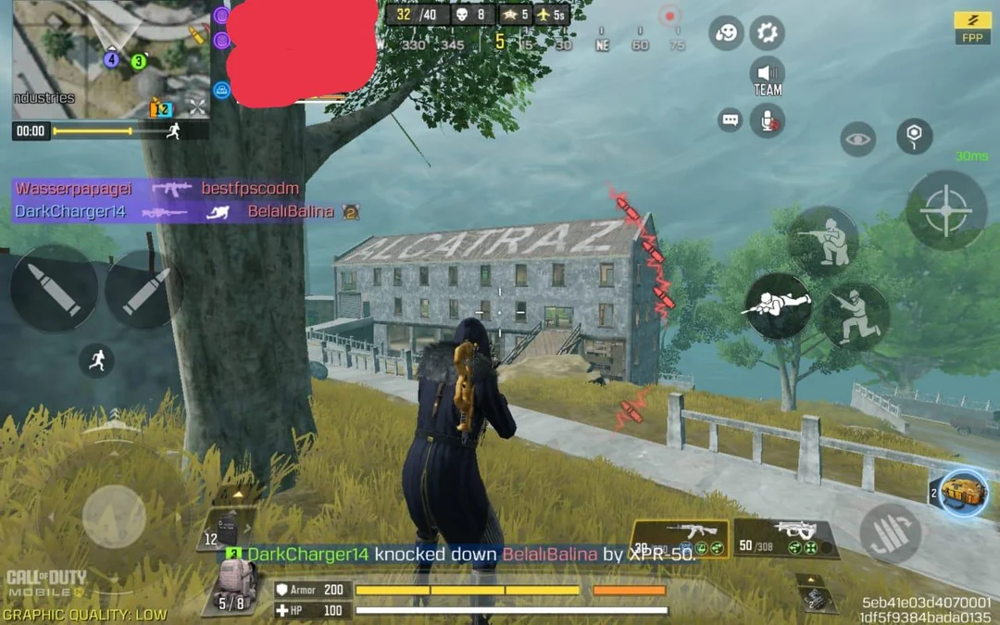
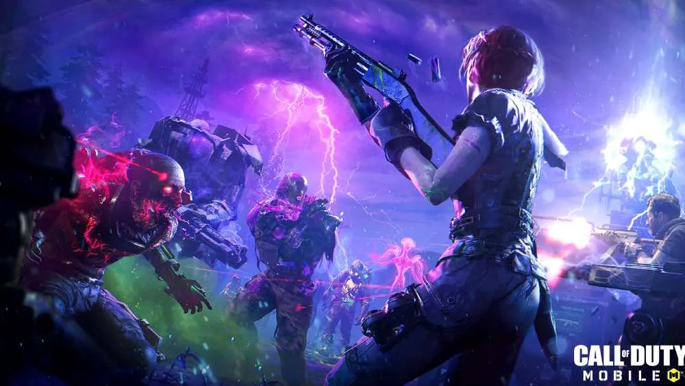

Call of Duty: Mobile is a 2019 first-person shooter video game developed by TiMi Studio Group and published by Activision for Android and iOS. Released as a free-to-play title, it was one of the largest mobile game launches in history, generating over US$480 million with 270 million downloads within a year. Call of Duty: Mobile was published in other regions by Garena, Tencent Games, VNG Corporation and TiMi Studio Group.
Players can choose to play ranked or non-ranked matches in multiplayer mode. It has two types of in-game currencies: "Credits", which are earned through playing the game, and "COD Points", which are bought with real-world money. It is possible to play the full game without paying, though some exclusive character and weapon skins can only be bought with COD Points. Apart from standard matchmaking, a private room for both the multiplayer and battle royale modes can also be accessed where players can invite and battle with their in-game friends. Multiplayer

The multiplayer mode is a first-person shooter similar to previous Call of Duty games. The game also has "Scorestreaks", which are special weapons that are available as the player reaches certain times and points. The primary modes which the game features include Team Deathmatch, Frontline, Domination, Hardpoint, Search and Destroy and Kill Confirmed. Additionally, the game features special and limited multiplayer modes that last for varying lengths of time. These include: Prop Hunt,[1] Rapid Fire, Sticks and Stones,[2] 2v2,[3] Capture the Flag,[4] One Shot One Kill,[5] Snipers Only,[6] and Gun Game,[7] and Attack of the Undead among others.

The game also includes battle royale modes featuring up to 100 players. A player can choose to play alone, on a two-man team, or in a four-man squad. At the start of a game, all players choose an ability from healing to making a launch pad. Once all 100 people are ready, they get aboard a plane that flies in a straight line over the map. This flight path changes every game. Every team is automatically given a jump leader who decides when and where the team will land, however the players can choose not to follow the jump leader and jump on their own if they wish.[8] At the beginning of the game, each player carries only a knife. The map has weapons, vehicles, and items which players can find and use to improve their chances of killing enemies while staying alive themselves. The mode has high tier loot zones (marked in yellow on the map) that provide players with better items The safe zone on the map shrinks as the game progresses, with players who remain outside the safe zone being killed if they stay outside for too long. A player or team wins the game if they are the last one remaining. Particularly, battle royale also has limited modes like Sniper Challenge, Battle Royale Alcatraz, Battle Royale Blackout, 20v20 Warfare, and Battle Royale Blitz. The game also features a MP/BR hybrid mode known as Ground War: Skirmish.

A Zombies mode was added in November 2019. It featured one map called Shi No Numa. It placed teams of players against zombies that attacked in waves. It was playable in Endless Survival Mode, which ran like the classic Zombies experience, and Raid Mode, which threw a set number of waves at the players before transitioning to a boss encounter. The players could choose whether to play it on Normal or Heroic difficulty.[9] The mode was removed in March 2020 due to it not reaching the desired level of quality.[10][11] Undead Siege, a zombie survival mode, was added into the game in August 2021. In it, a team of four players have to survive and protect their teleportation device from continuous waves of zombies. During the day, players have to collect supplies which would be used during the night to survive against a horde of zombies.[12] In addition, players during the day also take part in Daytime Side Missions, which include the Butcher, breaking the Aether Crystal Cluster, feeding 10 zombies to Cerberus and helping transport a big Aether Crystal. The mode has 3 difficulties - Casual, Hardcore and Nightmare. In casual, the team only has to survive for 3 nights while in other difficulties, the team has to survive for 5 nights. The Classic Zombies mode was added back to the game in October 2022, again only featuring the Shi No Numa map. [13]
About Category